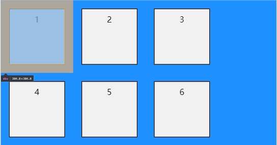
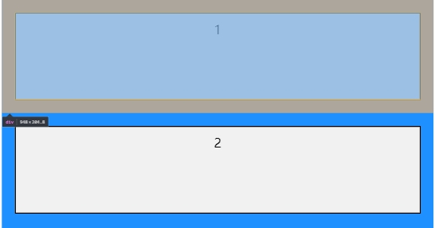
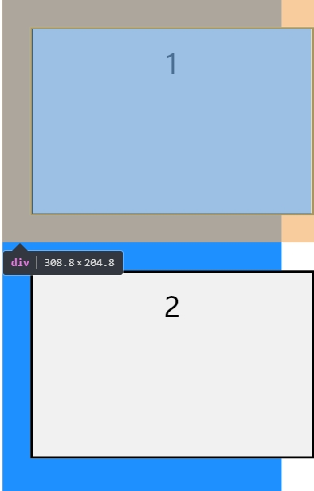

1.手机版responsive设置的4个分段
@media screen and (max-width:549px)
@media screen and (min-width:550px) and (max-width:769px)
@media screen and (min-width:770px) and (max-width:1024px)
@media screen and (min-width:1025px)
2.布局
什么都不设置，自动堆叠成一列，每个div占满一行

<body>
<div class="flex-container">
<div>1</div>
<div>2</div>
<div>3</div>
<div>4</div>
<div>5</div>
<div>6</div>
</div>
</body>
设置父元素为flexbox，横向/纵行，自动换行

.flex-container {
display:flex;
flex-direction: row/column;
flex-flow:wrap;
background-color: DodgerBlue;
}
设置子元素宽度width:-webkit-fill-available 修改容器宽度堆叠成一列

.flex-container > div {
#设置多列时改成每列列宽占父元素的百分比%
width:-webkit-fill-available;
height:200px;
margin: 30px;
background-color: #f1f1f1;
border-style: solid;
}
Width：100%: （不建议使用）
不设置margin: div宽度=容器的宽度=父元素宽度。
设置margin: 新的div宽度=(容器的宽度=父元素宽度)+margin宽度。这样整个div的宽度就会超出屏幕的范围。

.flex-container > div {
width: 100%;
margin: 30px;
height:200px;
border-style: solid;
text-align: center;
line-height: 75px;
font-size: 30px;
background-color: #f1f1f1;
}
width:-webkit-fill-available:
div的宽度=容器宽度+margin宽度=父元素宽度